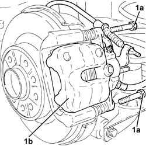
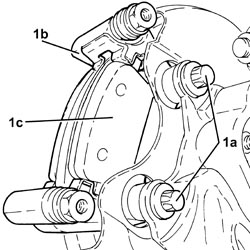
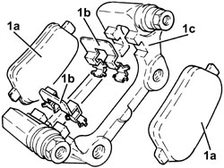
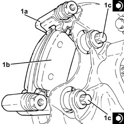
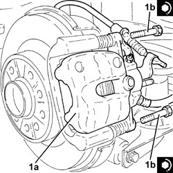

3310B57 REAR BRAKE CALIPER BRACKET (ONE), LEFT OR RIGHT - R.R.
- Path
- Procedures > 33 BRAKES > 3310 DISC BRAKES > 3310B REAR DISC BRAKES > 3310B57 REAR BRAKE CALIPER BRACKET (ONE), LEFT OR RIGHT - R.R.
- Kind
- repair procedure (removal / refitting; the operation number is the code)
- Applies to
- all engines; all production periods
- Interactive page
- https://sloeber94.github.io/elrnDB-fCrm/en/#/194000477
Applies to: all engines; all production periods
 Removing
Removing
 Refitting
Refitting- Position the vehicle on a lift.
Op. 4450B06 LEFT REAR WHEEL - R.R
Op. 7055B44 LEFT REAR WHEEL ARCH LINER - R.R
1. Undo the bolts (1a) and move the rear brake caliper (1b) securing it at the side.

Applies to: all engines; all production periods
1. Undo the bolts (1a) and remove the rear brake caliper bracket (1b) complete with rear brake pads (1c).

Applies to: all engines; all production periods
1. At the bench, separate the rear brake pads (1a) and the springs (1b) from the brake caliper bracket (1c).

Applies to: all engines; all production periods
Refitting
Removing- Place the rear brake pads and the springs in their housings in the rear brake caliper bracket.
1. Place the rear brake caliper bracket (1a), complete with rear brake pads (1b) in position, then tighten the bolts (1b) to the recommended torque.
Component | Fastening | dia | Value (daNm) | Validity |
|---|---|---|---|---|
Rear brake caliper brackets | Bolt | M12 | (steering knuckle side) 11.0 - 15.0 |

Applies to: all engines; all production periods
1. Position the rear brake caliper bracket (1a) in its housing and secure it tightening the bolts (1b) to the recommended torque.
Component | Fastening | dia | Value (daNm) | Validity |
|---|---|---|---|---|
Rear brake calipers | Bolt | M8x1.25 | (bracket side) 3.1 - 3.8 |

Applies to: all engines; all production periods
Op. 7055B44 LEFT REAR WHEEL ARCH LINER - R.R
Op. 4450B06 LEFT REAR WHEEL - R.R
- Remove the vehicle from the lift.
Topics linked from this page (2)
Topics that link to this page (4)
- 3310B48 REAR BRAKE DISC (ONE), LEFT OR RIGHT - R.R.
- 3310B59 REAR BRAKE DISC GUARD (ONE), LEFT OR RIGHT - R.R.
- 4450D10 HUB FOR ONE REAR WHEEL, L/H OR R/H - R+R WITH WHEEL REMOVED - CHECK WHEEL GEOMETRY SEPARATELY
- 4450D15 STUB AXLE FOR ONE REAR WHEEL HUB, LEFT OR RIGHT - R.R INCLUDES POSSIBLE BUSH REPLACEMENT - CHECK WHEEL GEOMETRY SEPARATELY